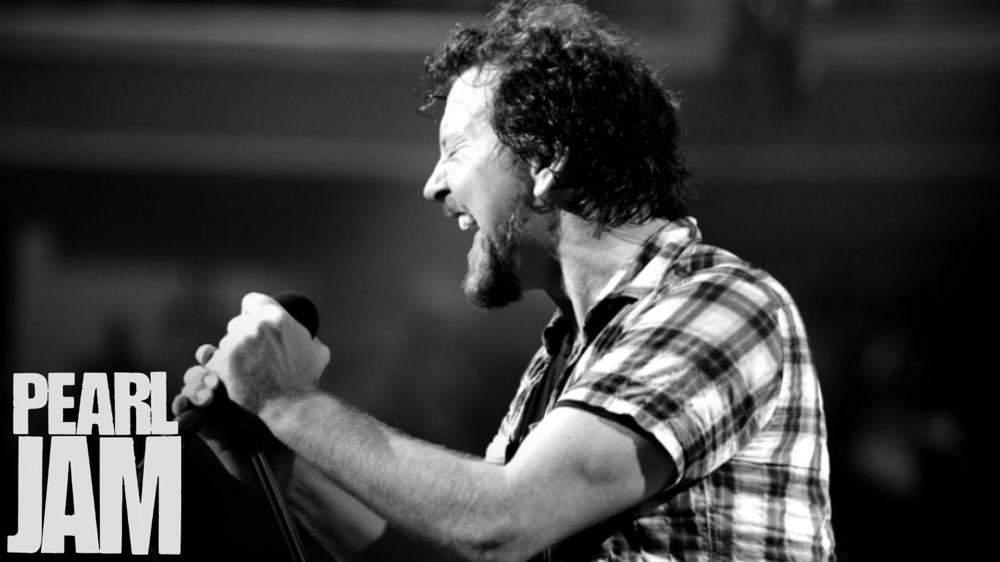

I am a student at the Unviersity of Connecticut's Stamford Campus.
I am a Digital Media and Design student, undecided about my concentration for focus, but eager to find it!
An avid fan of anime, videogames, film, Pearl Jam, and much more.

Lived in Bridgeport, Connecticut all 19 years or so of my life.
And much more! :DDDDD